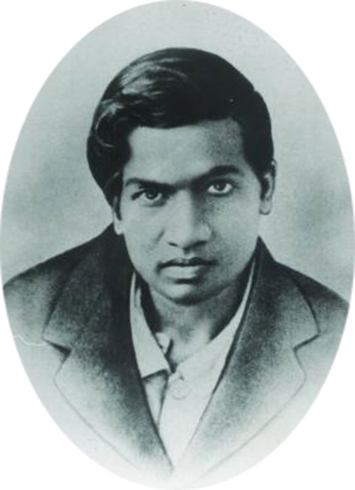

This a Factual Sheet about Him.
His Wikipedia PageOn December 22, 1887, the math genius Srinivasa Ramanujan was born in his maternal grandmother’s house in Erode. This house remained untraced for a long time. His father was a clerk with a cloth merchant and his mother was a housewife. She also used to sing at a local temple.
He took Inspiration from a book based on Mathematics. Ramanujan was largely self-taught and emerged from extreme poverty. He cultivated his love for mathematics single-handedly and in total isolation. At the age of 12, he borrowed from a friend a copy of Loney’s book on Plane Trigonometry, which is published by Cambridge University in 1894. Applied Mathematics gave a big dimension of Ramanujan’s life and brought him to the door of 20th century Mathematics.
Srinivasa Ramanujan had no formal training on math, though he is a person behind all mathematical discoveries. Some of his theorems are based on intuition. Hardy wrote on Ramanujan’s Formula “They must be true, because if they were not true, no one would have had the imagination to invent them.” S Ramanujan is one of youngest fellows in the history of the society. He joined fellowship in 1918 at the age of 31. Hardy and Ramanujan collaborated on more than half a dozen research papers within few years (from 1914-1917). Ramanujan published more than 30 research papers in three years at the same time when he was completing his fellowship. Within his limited period, he completed 3,900 results which were mostly on identities and equations. The last of the three of Ramanujan’s speculations created a sensation in 20th -century mathematics. The most celebrated discoveries of him were The Infinite Series of Pi. The museum is located in Chennai, carries many photos of Ramanujan’s home and family members, along with letters from his friends.It is a hard effort of his to collect Ramanujan’s pictures, letters, etc. which is used in the museum dedicated to telling Ramanujan’s life story. It is located in Chennai and has many photographs of his home and family, along with letters to and from friends, relatives, etc. As per the report, Ramanujan liked to write his ideas in a notebook in green ink. One of his notebooks was known as the ‘Lost Notebook’. It was discovered in the Trinity College library by mathematician George Andrews in 1976. Later, it was later published as a book. Ramanujan’s birth anniversary which is on December 22, is celebrated as the National Mathematics Day every year. He is the symbol for aspiring young Indian students to break their bonds of intellectual confinement and perhaps soar the way that Ramanujan did. Ramanujan embodies that marvelous miracle of the human mind to frame concepts and to use formulas and symbols as tools of thought. It recognizes as a powerful tool deeper into the mysteries of the universe, and the mysteries of one’s own being. As long as the spirit of inquiry and inquisitive minds are alive, Ramanujan’s legacy will pass from one generation to the next. Embibe salutes him.